- 32 Residential Town-houses — CHERD Africa LtdKitengela, Kajiado · KES 320M · design, documentation & supervision
- Cozy Haven ApartmentsThindigua, Kiambu · KES 162M · design & supervision
- Student Centre — Ruaraka CampusNairobi · KES 25M · concept to supervision
- Residence for Dr. Oscar GithuaMugumo Estate, Kamiti Rd · KES 12.5M
- Residence for Mr. James KitongaKamiti Corner, Kiambu · KES 8.2M
- Residence for Mr. Joseph KimaniGatundu, Kiambu · KES 7.5M
- Chill Zone — KCA UniversityKitengela Campus · KES 6.5M
Registered Architect — BORAQS A1690 · M.AAK
Designing spaces that outlive the drawing.
I'm Jesse Karanga Kimani — an architect in Nairobi, Kenya. From concept to completion, I design sustainable residential, commercial and institutional buildings that exceed expectations and respect their context.
- 0Years in practice
- 0Projects handled
- 0KES B+ delivered
- A1690BORAQS Reg. No.
01
Career statement
As an architect, I am dedicated to utilising my strengths to design and deliver exceptional building projects. My ability to understand the unique needs of clients allows me to create designs that exceed their expectations.
I find immense satisfaction in being involved in every aspect of a project, from conception to completion. Most importantly, my passion lies in creating sustainable buildings that positively impact people's lives and the environment — buildings that are aesthetically pleasing and environmentally responsible, offering a better quality of life while minimising impact on our planet.
- PracticeConsultant Architect — private practice since March 2017
- EducationBachelor of Architecture, JKUAT — 2014
- RegistrationBORAQS Kenya, March 2017 — Reg. No. A1690
- ToolsArchiCAD · MS Office Suite · Presentation & documentation
02
Professional experience
Twelve years across private practice, design-build contracting and consultancy — from KES 6M residences to a KES 1.6B national housing programme.
- Police Housing Programme — MTIHUDKES 1.6B · Kamiti, Ruiru GSU, Kenyatta Rd & South C · detail design, shop drawings, EPS customisation & supervision
- Kiambu Investors CenterCounty Government of Kiambu · KES 30M · shop drawings, design & supervision
- Residence for Mr. WeruMugutha, Ruiru · KES 6.4M · EPS customisation & supervision
- Kabarak Referral HospitalKabarak University · concept & scheme design
- Baringo County Government Officesconcept drawings & scheme designs
- Residence for Hon. MwangangiMachakos County · KES 12.4M
03
Selected works
Built and commissioned work — photographed on site or visualised for clients.
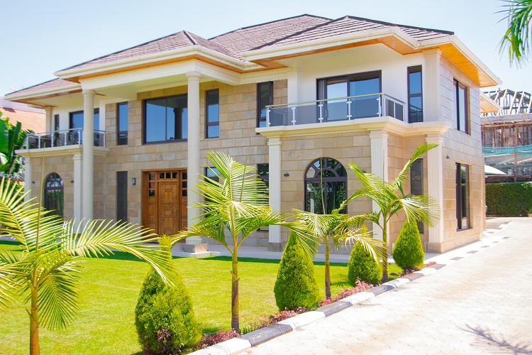
Residential Maisonette
Tatu City, Kiambu — neoclassical mansion with grand columns and stone cladding
Residential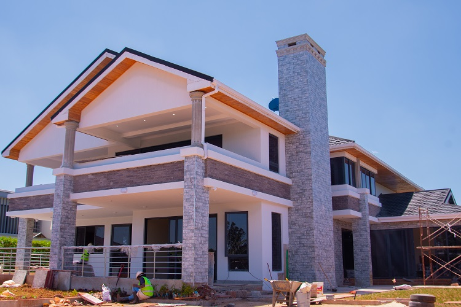
Stunning Mansion
Nairobi Metro — contemporary and classic fusion with stone chimney and balconies
Residential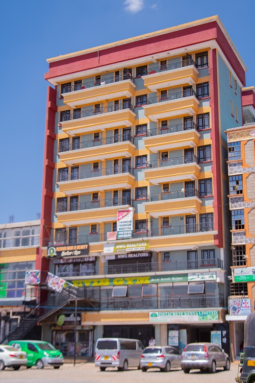
Commercial Flats
Membley, Ruiru — retail at street level, balconied residences above
Mixed-use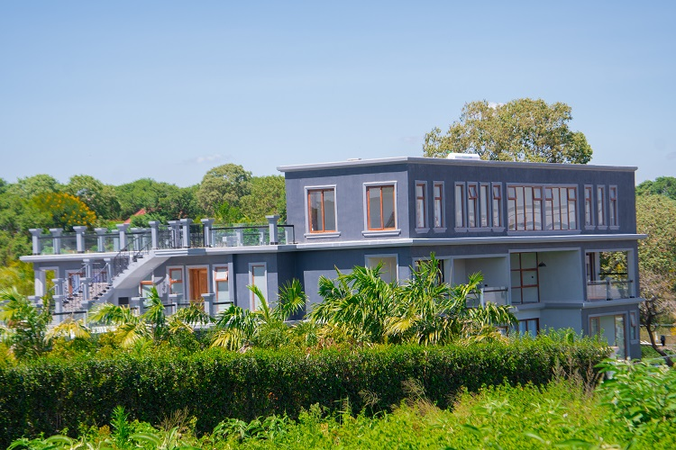
5-Bed Minimalist Maisonette
Nairobi Metro — restrained minimalist language, open rooftop terraces
Residential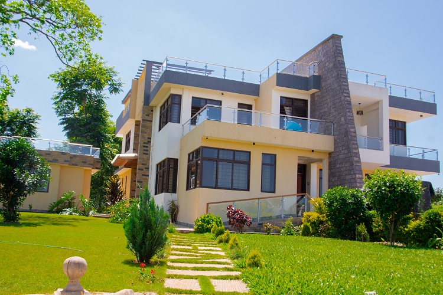
Luxurious 7-Bed Maisonette
Nairobi Metro — layered terraces and a paved arrival court
Residential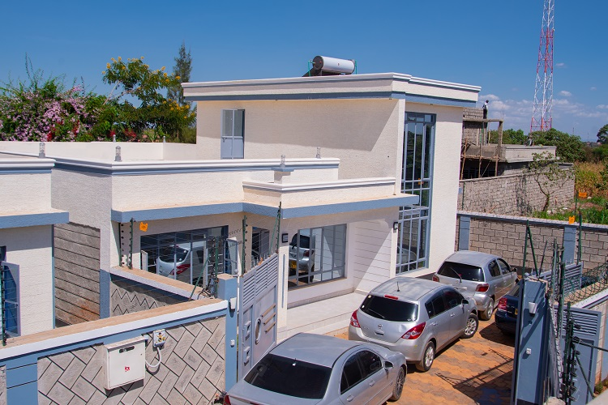
Modern Home-Office Retreat
Nairobi Metro — live-work retreat in glass, white volumes and stone
Live-work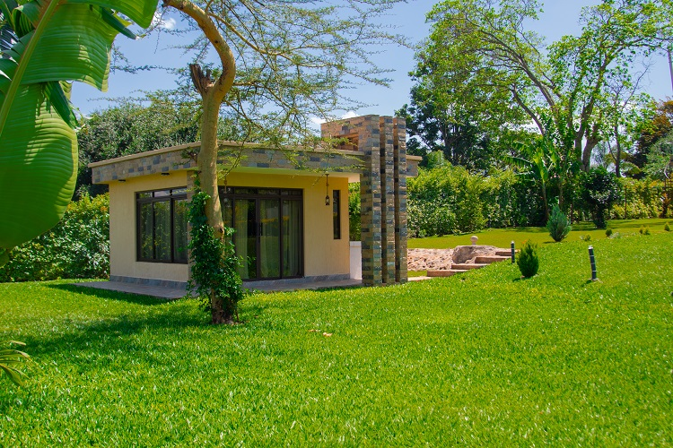
Bungalows at Mugutha
Mugutha, Kiambu — full-height glazing and stone-clad piers in lawn
Residential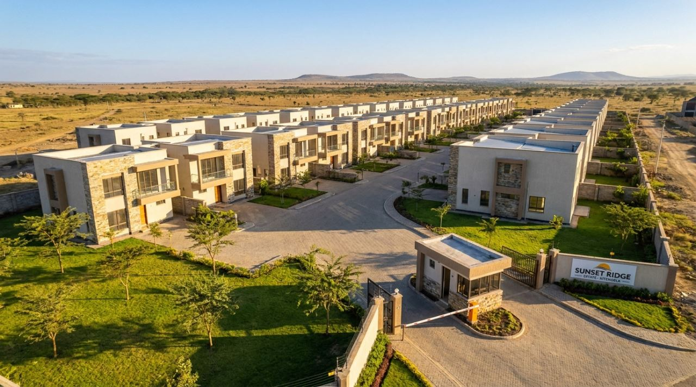
32 Town-houses — CHERD Africa
Kitengela, Kajiado — KES 320M gated development · visualisation
Development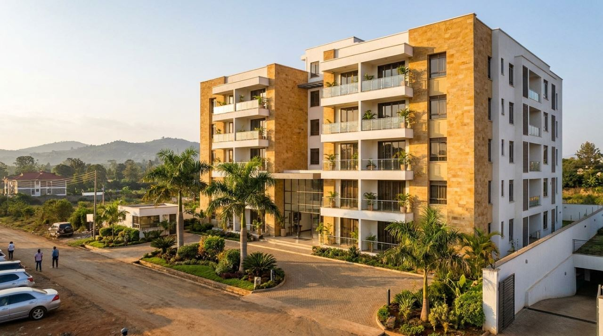
Cozy Haven Apartments
Thindigua, Kiambu — KES 162M · design & supervision · visualisation
Residential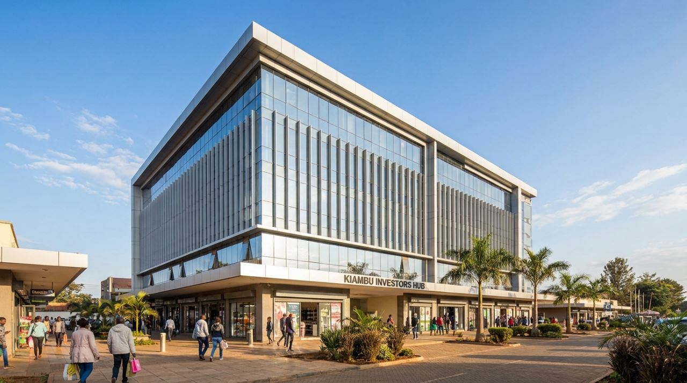
Kiambu Investors Center
County Government of Kiambu — KES 30M · visualisation
Civic
04
What I do
Architecture
Concept design, detailed documentation and statutory approvals for residential, commercial and institutional buildings.
Interior Design
Interior spaces that are functional and inspiring — finishes, joinery and lighting resolved with the architecture.
Master Planning
Site and estate master plans that balance density, landscape and phased delivery.
Construction Management
On-site supervision and contract administration keeping quality, cost and timelines on track.
Landscape Architecture
Outdoor rooms, gardens and hardscape that extend the life of the building into its grounds.
05
Credentials
Registered, licensed and insured to practice architecture in Kenya.
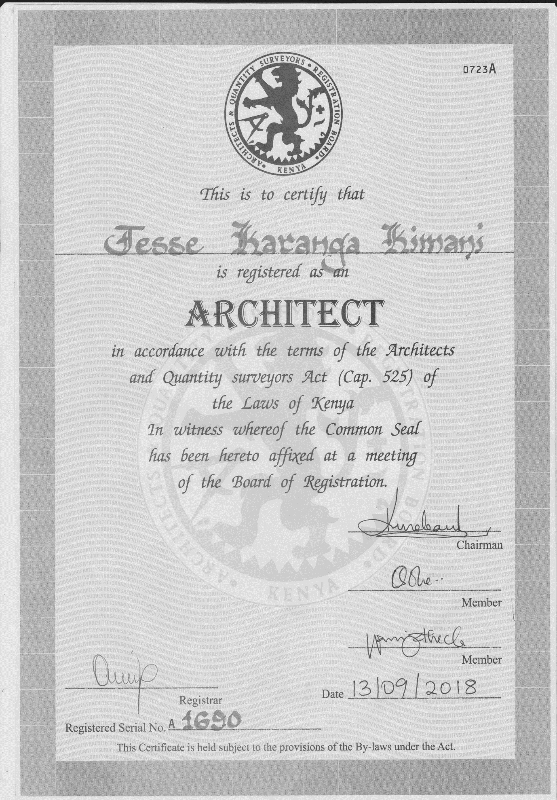
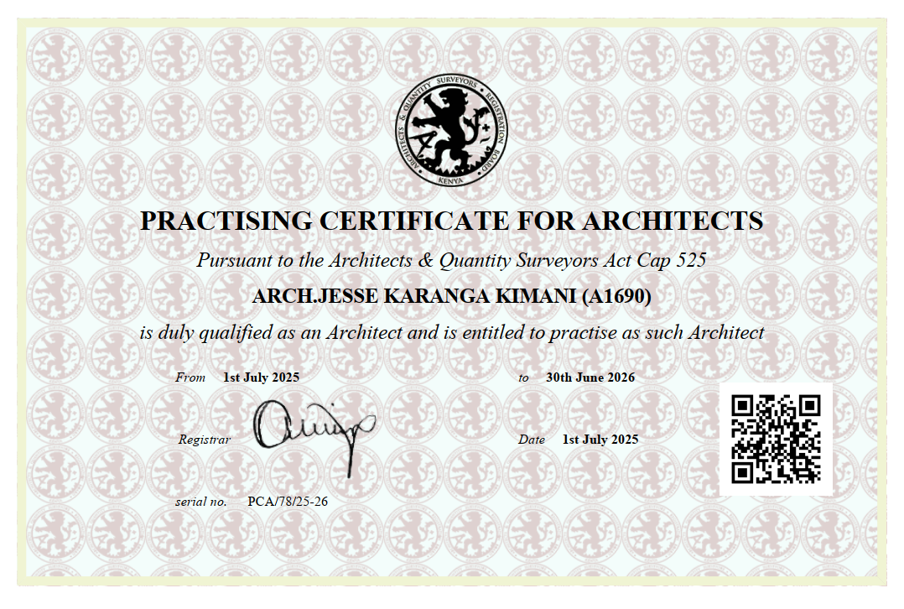
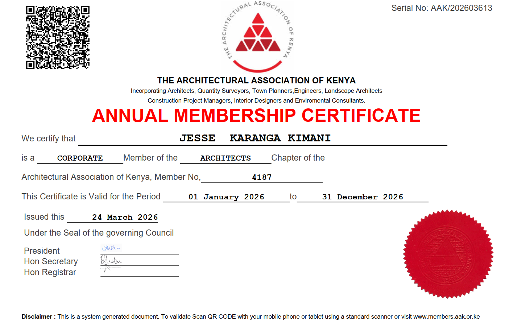
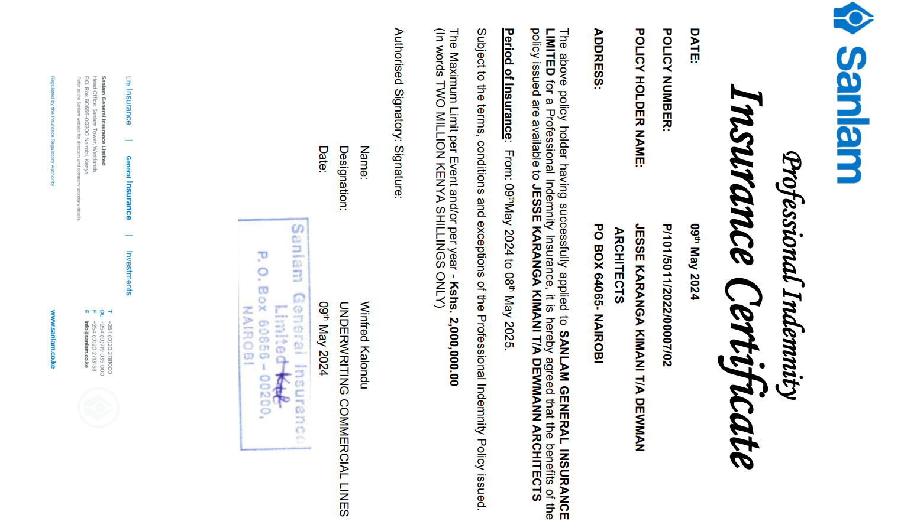
Education
Bachelor of Architecture
Jomo Kenyatta University of Agriculture & Technology — 2014
Registration
Registered Architect
Board of Registration of Architects & Quantity Surveyors, March 2017 — A1690
Membership
M.AAK (Architect)
Corporate Member, Architectural Association of Kenya
Available for commissions